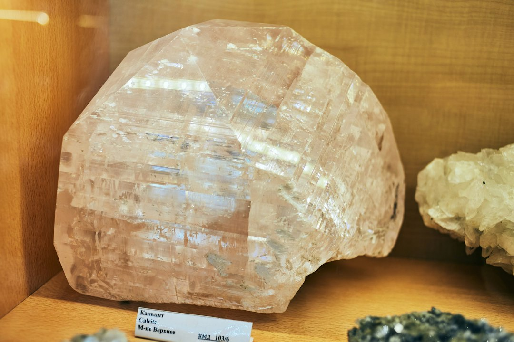

中 갈륨 일본 재개, 게르마늄 봉쇄 4개월째 지속

[자료사진] 기사와 무관한 이미지입니다.
중국은 2025년 6월부터 약 4개월간 일본에 대한 갈륨 수출을 전면 중단했다가 10월 들어 재개했다. 일본 반도체·LED 업계가 대체 조달을 위해 캐나다·독일 루트를 긴급 탐색하는 동안 갈륨 현물가는 kg당 최고 2,100달러까지 치솟았다. 중국의 갈륨 재개 결정은 외교 압력이 아닌 '수요 통제력 확인' 차원으로 해석된다.
게르마늄은 일본뿐 아니라 한국·EU 전방위로 봉쇄가 유지되고 있다. 광섬유 프리폼·적외선 렌즈·방산 열화상 소재에 필수적인 이산화게르마늄(GeO2) 조달은 현재 러시아·캐나다 2개 루트로만 분산된 상태이며, 러시아산 GeO2 가격은 2023년 대비 3.2배 상승했다. 한국 내 게르마늄 정련 역량은 2028년 이전 가동이 어려운 구조다.
수출통제가 '광산 대 광산' 경쟁이 아니라 '허가 대 허가' 게임으로 전환된 지 3년이 지났다. 중국은 갈륨·게르마늄·안티몬·흑연·텅스텐 5대 소재의 수출허가제를 통해 단일 소재별 on/off 스위치를 쥐고 있다. 이번 갈륨 재개는 협상 레버리지를 소진하지 않으면서 일본에 '계속 공급받으려면 조건이 있다'는 신호를 전달하는 정교한 운용이다.
한국 정부는 이번 중국 갈륨 수출통제 영향을 '단기 제한적'으로 공식 평가했으나, 현장에서는 GaN 파운드리 단가 재협상이 2025년 3분기부터 이미 진행 중이다. 국내 GaN 전력반도체 수요 기업 3곳 이상이 웨이퍼 단가 15~20% 인상 통보를 받았고, 이는 전기차 인버터·5G 기지국 모듈 원가 구조에 직접 반영되고 있다.
갈륨 재개·게르마늄 차단의 비대칭 운용은 중국이 소재별 협상 카드를 독립적으로 관리하는 '분리 통제 전략'으로 진화했음을 보여준다. 과거 한꺼번에 규제했다가 한꺼번에 풀던 방식과 달리, 이제는 소재마다 상대국·기업별 맞춤형 압박이 가능하다. 한국 기업이 갈륨 재개 소식에 안도하는 순간 게르마늄 조달 공백이 심화되는 구조다.
게르마늄 봉쇄 지속은 광섬유·방산·적외선 광학 세 산업 동시에 타격을 준다. 특히 국내 방산 수출 확대 기조 속에서 열화상 모듈용 GeO2 조달 공백은 납기 리스크로 직결된다. 2025년 방산 수출 목표 200억 달러 달성 여부에 GeO2 조달 안정성이 변수로 등장했다.
캐나다 텍 리소시스(Teck Resources)와 독일 PPM Pure Metals는 갈륨·게르마늄 대체 조달 수요가 몰리며 수혜를 입고 있다. PPM은 2025년 게르마늄 출하 계약 잔고가 전년 대비 40% 이상 증가했다고 밝혔다.
국내에서는 고려아연이 2028년 갈륨 연 15.5톤 국내 생산을 앞두고 선계약 협상력이 강화되는 국면이다. 게르마늄 분야에서는 영풍그룹 계열의 정련 역량 구축 타당성 검토가 가속화될 가능성이 높다.
일본 스미토모화학·DOWAホールディングス 등 GaAs 웨이퍼 제조사는 4개월 갈륨 공백으로 생산 일정 조정을 거쳤으며, 일부 고객사에 납기 2~4주 지연을 통보했다. 재고 버퍼 없이 운영하던 중소 LED 칩 메이커는 가동률 80% 미만으로 떨어진 곳도 있다.
한국 광섬유 프리폼 제조사(OFS·특수광학 계열)는 GeO2 조달 단가 상승분을 고객사에 전가하기 어려운 장기 공급계약 구조를 안고 있어 마진 압박이 3~4분기 지속될 전망이다.
게르마늄 의존 제품군을 보유한 구매담당자라면 지금 당장 러시아산 비중을 파악하라. 러시아 GeO2 루트는 제재 확대 시 하루아침에 차단될 수 있는 '이중 지정학 리스크'를 내포한다. 캐나다·벨기에(Umicore) 루트로의 전환 견적을 병행 확보해야 한다.
GaN 전력반도체 모듈을 구매하는 전기차·5G 장비 기업은 이미 시작된 단가 15~20% 인상 협상을 단순 거부하기보다 장기 물량 약정과 연계한 단가 안정 협약으로 전환하는 게 현실적이다. 3분기 이후 분기 단위 갱신 구조는 불리하다.
실제 조달 현장에서는 — 갈륨 재개 소식이 나오자마자 '재고 적립 필요 없다'는 판단이 구매팀에 퍼지는 패턴이 반복된다. 하지만 중국이 재개한 것은 '완전 자유화'가 아니라 '허가 유지하의 선별 공급'이다. 수출허가 취소 한 번이면 다시 4개월 공백이 생긴다. 안전 재고를 3개월치 미만으로 줄이는 결정은 지금 이 시점에서 위험하다.
이 포스팅은 쿠팡 파트너스 활동의 일환으로 수수료를 제공받습니다.